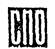

МИНИСТЕРСТВО ЭНЕРГЕТИКИ И ЭЛЕКТРИФИКАЦИИ СССР
ПРАВИЛА
ПРИЕМКИ В ЭКСПЛУАТАЦИЮ
ОТДЕЛЬНЫХ ПУСКОВЫХ КОМПЛЕКСОВ
И ЗАКОНЧЕННЫХ СТРОИТЕЛЬСТВОМ
ЭЛЕКТРОСТАНЦИЙ,
ОБЪЕКТОВ ЭЛЕКТРИЧЕСКИХ
И ТЕПЛОВЫХ СЕТЕЙ
ВСН 37-86
МИНЭНЕРГО СССР

СОЮЗТЕХЭНЕРГО
Москва 1987
РАЗРАБОТАНО Всесоюзным институтом по проектированию и организации энергетического строительства (Оргэнергострой);
Производственным объединением по наладке, совершенствованию технологии и эксплуатации электростанций и сетей (Союзтехэнерго)
ИСПОЛНИТЕЛИ П.А. ВОРОНОВ (Оргэнергострой); А.Н. ВАВИЛИН (Союзтехэнерго)
СОГЛАСОВАНО с Госстроем СССР 28.03.86 г.;
ЦК профсоюза рабочих электростанций и электротехнической промышленности 28.07.86 г.
УТВЕРЖДЕНО Министерством энергетики и электрификации СССР 06.02.87 г.
Заместитель министра А.Н. МАКУХИН
СОДЕРЖАНИЕ
|
3. Рабочие комиссии, их права, обязанности и порядок работы.. 3 4. Государственные приемочные комиссии, их права, обязанности и порядок работы.. 4 |
|
ПРАВИЛА
ПРИЕМКИ В ЭКСПЛУАТАЦИЮ |
ВСН 37-86Минэнерго СССР |
Вводится в действие
с 06.02.87 г.
1.1. Настоящие Правила устанавливают порядок приемки в эксплуатацию законченных строительством новых, расширением, реконструкцией действующих гидравлических, тепловых электростанций (ГЭС, ТЭС), районных котельных (паровых и водогрейных), объектов электрических и тепловых сетей, их очередей и пусковых комплексов, именуемых в дальнейшем «энергообъектами», и не распространяются на электрические сети напряжением 20 кВ и ниже, сельские силовые и осветительные электроустановки.
Кроме настоящих Правил, следует соблюдать требования СНиП 3.01.04-87 и правил технической эксплуатации электрических станций и сетей, правил Госгортехнадзора СССР, техники безопасности и промышленной санитарии.
(Измененная редакция. Изм. № 1.)
С выходом настоящих Правил теряют силу:
Правила приемки в эксплуатацию законченных строительством линий электропередачи напряжением 35 кВ и выше (М.: Оргэнергострой, 1967);
Правила приемки в эксплуатацию законченных строительством трансформаторных подстанций напряжением 35 кВ и выше (М.: Оргэнергострой, 1967);
Правила приемки в эксплуатацию гидроэлектрических станций (М.: Информэнерго, 1969);
Правила приемки в эксплуатацию законченных строительством отдельных очередей и тепловых электростанций в целом (М.: ХОЗУ Минэнерго СССР, 1974);
ОСТ 34.245-73. Подстанции трансформаторные напряжением 35 кВ и выше. Правила приемки в эксплуатацию;
Руководящие указания по проведению пусконаладочных работ и приемке в эксплуатацию законченных строительством отдельных энергоблоков тепловых и атомных электростанций (М.: Информэнерго, 1979).
Примечания: 1. Под пусковым комплексом понимается выделение из полного проектного объема титула энергообъекта совокупности сооружений и объектов, отнесенных к определенным агрегатам и обеспечивающих их нормальную эксплуатацию при определенных параметрах либо отнесённых к энергообъекту в целом на завершающем этапе строительства (без привязки к конкретным агрегатам).
2. Пусковой комплекс может устанавливать: возможность работы оборудования по временным схемам с неполной загрузкой; степень законченности отдельных сооружений, помещений, вспомогательных хозяйств и устройств; изменения, по согласованию с соответствующим республиканским, краевым, областным комитетом профсоюза, санитарно-гигиенических условий и условий безопасности труда против принятых в проекте полностью законченного объекта, но не выходящих за пределы допускаемых общесоюзными нормами.
1.2. Завершающий (последний) пусковой комплекс ГЭС, ТЭС, подстанции включает:
- возведение плотины и защитных сооружений до проектных отметок;
- строительство золошлакоотвалов и шламонакопителей на полный проектный объем расчетного периода;
- благоустройство и озеленение территории;
- обвалование, кроме обвалования емкостей с горючими жидкостями;
- демонтаж строительного и монтажного кранового оборудования, бетонорастворного хозяйства и других временных зданий и сооружений;
- ликвидацию временных подъездных автомобильных и железных дорог;
- рекультивацию земель и закрепление песков;
- ремонт постоянных зданий и сооружений, использованных в период строительства.
1.3. Выполнение работ по штукатурным покровным оболочкам оборудования и газовоздухопроводов, находящихся вне зданий, при приемке энергообъектов в эксплуатацию в сентябре - апреле в I строительно-климатическом районе и октябре - марте во II - IV строительно-климатических районах (период с температурой ниже +5 °С) разрешается переносить на срок не позднее июля для I строительно-климатического района и июня следующего (текущего) года для остальных районов.
1.4. В соответствии с п. 1.6 СНиП 3.01.04-87 применительно к энергообъектам принимаются в эксплуатацию рабочими комиссиями следующие здания, сооружения и помещения, входящие в состав пускового комплекса, при необходимости их ввода в действие в процессе строительства: водоподготовительные установки, пусковые котельные, резервные дизельные электростанции, железнодорожные пути, разгрузочные и размораживающие устройства, масляные и мазутные хозяйства, компрессорные и насосные станции, очистные сооружения, электролизерные и углекислотные установки, помещения электроустановок и гражданской обороны, центральные тепловые пункты, ремонтные цехи и мастерские, монтерские пункты и пункты связи, кислородные и пропан-бутановые раздаточные, склады и хранилища, пожарные и железнодорожные депо, гаражи, азотно-кислородные и ацетилено-генераторные станции, золошлакоотвалы, здания дожигания отходов, хлораторные установки, сооружения и помещения, используемые строительно-монтажными организациями в процессе строительства.
(Измененная редакция. Изм. № 1.)
2.1. Дополнительно к ответственности, указанной в разд. 2 СНиП 3.01.04-87:
(Измененная редакция. Изм. № 1.)
2.1.1. Заказчики отвечают за выполнение требований пожарной безопасности.
3.1. В дополнение к п. 3.2 разд. 3 СНиП 3.01.04-87 в состав рабочих комиссий по энергообъектам сметной стоимостью 0,1 млн. руб. и выше включаются представители головной пусконаладочной организации, научного руководителя проекта и главного конструктора (для экспериментальных объектов), органов Госгортехнадзора СССР (кроме объектов электрических сетей) и представители других заинтересованных организаций и органов надзора, определяемых органом, назначающим рабочую комиссию, при приемке в эксплуатацию зданий, сооружений и помещений, указанных в п. 1.4 настоящих Правил.
(Измененная редакция. Изм. № 1.)
3.2. Рабочие комиссии создаются до начала комплексного опробования не позднее чем:
- за 12 мес. для энергетических установок с головными образцами основного оборудования или первых энергетических установок с серийным оборудованием на вновь строящихся объектах, а также для экспериментальных объектов;
- за 6 мес. для паротурбинных установок мощностью 175 МВт и выше, а также газотурбинных, парогазовых, геотермальных и солнечных установок мощностью 100 МВт и выше;
- за 4 мес. для гидроэнергетических установок;
- за 2 мес. для паротурбинных установок мощностью менее 175 МВт, а также газотурбинных, парогазовых, геотермальных и солнечных установок мощностью менее 100 МВт.
В остальных случаях время создания рабочих комиссий определяется заказчиком в соответствии с п. 3.3 СНиП 3.01.04-87.
(Измененная редакция. Изм. № 1.)
3.3. В дополнение к п. 3.4 СНиП 3.01.04-87 рабочие комиссии обязаны:
(Измененная редакция. Изм. № 1.)
3.3.1. Произвести приемку подводной части гидротехнических сооружений (с закладкой контрольно-измерительной аппаратуры) и оборудования до их затопления и составить акт о готовности их к затоплению для предъявления государственной приемочной комиссии или комиссии, назначенной Минэнерго СССР, которая дает разрешение на затопление котлована и перекрытие русла реки.
3.4. Рабочие комиссии в необходимых случаях образовывают специализированные подкомиссии (строительная, турбинная, котельная, гидротехническая, электротехническая, по системам контроля и управления и др.), определяют их состав, продолжительность и объем работы.
3.5. Генеральный подрядчик представляет рабочей комиссии документацию, перечисленную в подпунктах «а», «б», «в», «г», «з», «и», «к» п. 3.5 СНиП 3.01.04-87, а также:
- акты индивидуальных испытаний смонтированного им оборудования, технологических трубопроводов давлением до 22 кгс/см2 (2,16 МПа), не перечисленных в приложении I к Приказу Минэнерго СССР от 31.05.76 г. № 40а;
- акты осмотров и испытаний подводной части гидротехнических сооружений и оборудования, закладной контрольно-измерительной аппаратуры и готовности к затоплению котлована и перекрытия русла реки;
- акты испытаний внутренних и наружных трубопроводов, перечисленных в примечании I к приложениям к Приказу Минэнерго СССР от 31.05.76 г. № 40а, исключая трубопроводы автоматических систем пожаротушения;
- трехлинейную схему воздушной линии электропередачи с нанесением расцветки фаз, транспозиции проводов и номеров транспозиционных опор;
- акты осмотров и измерений переходов и пересечений, составленные с представителями заинтересованных организаций (для ВЛ).
(Измененная редакция. Изм. № 1.)
3.6. Монтажные (строительно-монтажные) организации при сдаче основного и вспомогательного энергетического, общестанционного и другого оборудования, технологических трубопроводов, включая трубопроводы автоматических систем пожаротушения, строительных металлических и железобетонных конструкций (в объеме работ, предусмотренных договором субподряда) представляют рабочей комиссии документацию, перечисленную в подпунктах «г», «д», «з», «к» п. 3.5 СНиП 3.01.04-87.
(Измененная редакция. Изм. № 1.)
3.7. Электромонтажные и специализированные организации при сдаче электротехнических устройств; систем автоматизации; устройств телефонизации, радиофикации, телевидения, сигнализации; трубопроводов автоматических систем пожаротушения на подстанциях; строительных металлических и железобетонных конструкций (в объеме работ, предусмотренных договорами субподряда) представляют рабочей комиссии документацию, перечисленную в подпунктах «г», «д», «е», «ж», «з», «к» п. 3.5 СНиП 3.01.04-87 и «Правилах устройства электроустановок (ПУЭ)».
(Измененная редакция. Изм. № 1.)
3.8. Документация, перечисленная в п. 3.5, 3.6, 3.7 настоящих Правил, представляется в одном экземпляре.
После окончания работы рабочей комиссии вся документация должна быть передана заказчику и хранится у него.
3.9. Монтажные (строительно-монтажные), электромонтажные и специализированные организации представляют рабочей комиссии документацию, перечисленную соответственно в пп. 3.6 и 3.7, если это особо оговорено в договорах субподряда. При отсутствии этой записи документация представляется генеральным подрядчиком.
4.1. В дополнение к проверкам, изложенным в п. 4.19 СНиП 3.01.04-87, государственные приемочные комиссии обязаны:
- принять решение о сроках затопления котлована и перекрытия русла реки (для ГЭС), если оно не принято специальной комиссией Минэнерго СССР, на основании проверки актов рабочих комиссий о готовности систем, оборудования, сооружений.
(Измененная редакция. Изм. № 1.)
4.2. Приемка в эксплуатацию энергообъектов, их очередей и пусковых комплексов сметной стоимостью 4,0 млн. руб. и выше, за исключением перечисленных в п. 4.1 СНиП 3.01.04-87, производится государственными приемочными комиссиями, назначенными Минэнерго СССР (приказом министра, а в его отсутствие - первого заместителя министра по эксплуатации) или другими министерствами и ведомствами СССР, которым выделялись капитальные вложения на строительство этих энергообъектов.
(Измененная редакция. Изм. № 1.)
4.3. Назначение государственных приемочных комиссий по энергообъектам, их очередям и пусковым комплексам сметной стоимостью ниже 4,0 млн. руб. производится приказами:
4.3.1. Директоров предприятий, учреждений и организаций - до 0,5 млн. руб.
4.3.2. Руководителей РЭУ, ПЭО - до 1,5 млн. руб.
4.3.3. Руководителей управлений министерств энергетики и электрификации Украинской ССР, Казахской ССР, главных управлений Министерства энергетики и электрификации Узбекской ССР - до 2,0 млн. руб.
4.3.4. Руководителей главных управлений, главных производственных управлений энергетики и электрификации, объединений министерства, министерств энергетики и электрификации Украинской ССР, Казахской ССР, Узбекской ССР и Молдглавэнерго - до 4,0 млн. руб.
4.4. В дополнение к п. 4.13 СНиП 3.01.04-87 в состав государственных приемочных комиссий по энергообъектам сметной стоимостью 0,1 млн. руб. и выше включаются представители: субподрядных организаций по монтажу основного энергетического оборудования, электротехнических устройств и систем автоматизации; головной пусконаладочной организации (для головных и первых на ТЭС и ГЭС энергоблоках); научного руководителя проекта и главного конструктора (для экспериментальных объектов); органов по регулированию использования и охране вод системы Министерства мелиорации и водного хозяйства СССР (кроме объектов электрических и тепловых сетей); Государственной инспекции по охране атмосферного воздуха при Госкомитете СССР по гидрометеорологии и контролю природной среды (для ТЭС и котельных); финансирующего банка и при необходимости - органов рыбоохраны Министерства рыбного хозяйства СССР (для объектов, деятельность которых влияет на состояние и воспроизводство рыбных и живых ресурсов континентального шельфа СССР и экономической зоны СССР); Министерства путей сообщения (для объектов, имеющих железнодорожные подъездные пути); органов государственного газового надзора Министерства газовой промышленности (при наличии в пусковом комплексе объектов, подконтрольных этим органам); заводов-изготовителей уникального и сложного технологического оборудования; органов Государственной инспекции по контролю за работой газоочистных и пылеулавливающих установок Минхиммаша; соответствующих штабов гражданской обороны (для объектов со встроенными сооружениями, помещениями или отдельно стоящими сооружениями гражданской обороны). Число представителей определяется органом, назначающим эту комиссию.
(Измененная редакция. Изм. № 1.)
4.5. В состав государственных приемочных комиссий по энергообъектам сметной стоимостью до 0,1 млн. руб. включаются представители организаций и органов, указанных в письме Госстроя СССР от 31.10.83 г. № ДП-5667-1 (Указание Минэнерго СССР от 16.11.83 г. № Ф-14863).
Примечание. Для ГЭС, ГРЭС и объектов электрических и тепловых сетей в состав государственных приемочных комиссий включаются представители тех исполнительных комитетов районов и городов, на территории которых будут образованы водохранилища или ведется строительство воздушных и кабельных линий электропередачи или магистральных тепловых сетей.
При прохождении воздушных линий электропередачи через несколько районов области в состав государственных приемочных комиссий включается представитель исполкома областного Совета народных депутатов.
4.6. Государственная приемочная комиссия назначается не позднее чем:
за 6 мес. до установленного срока сдачи в эксплуатацию пускового комплекса ТЭС и ГЭС;
за 3 мес. до установленного срока сдачи в эксплуатацию остальных энергообъектов.
4.7. Заказчик представляет государственным приемочным комиссиям документацию, перечисленную в п. 4.17 СНиП 3.01.04-87 и п. 3.8 настоящих Правил, а также:
схему управления и организационную структуру эксплуатации энергообъекта;
справку о наличии формуляров на монтаж оборудования и производство сварочных работ, перечень заводских инструкций, чертежей, протоколов.
(Измененная редакция. Изм. № 1.)
4.8. При приемке в эксплуатацию завершающего (последнего) пускового комплекса энергообъекта заказчик, кроме указанного в п. 4.7 настоящих Правил, представляет государственным приемочным комиссиям паспорта на сооружения (в двух экземплярах).
4.9. Акты приемки в эксплуатацию пусковых комплексов утверждаются грифом «утверждения», а полностью законченных строительством энергообъектов в целом - приказом органов, назначивших комиссии.
5.1. Приемка в эксплуатацию энергообъектов в целом, их очередей и пусковых комплексов, сооружаемых на базе сложного отечественного оборудования, производится в соответствии с разд. 6 СНиП 3.01.04-87.
(Новая редакция, Изм. № 1.)
6.1. Закрытие сводных сметных расчетов производится в соответствии с разд. 8 СНиП 3.01.04-87.
(Новая редакция, Изм. № 1.)